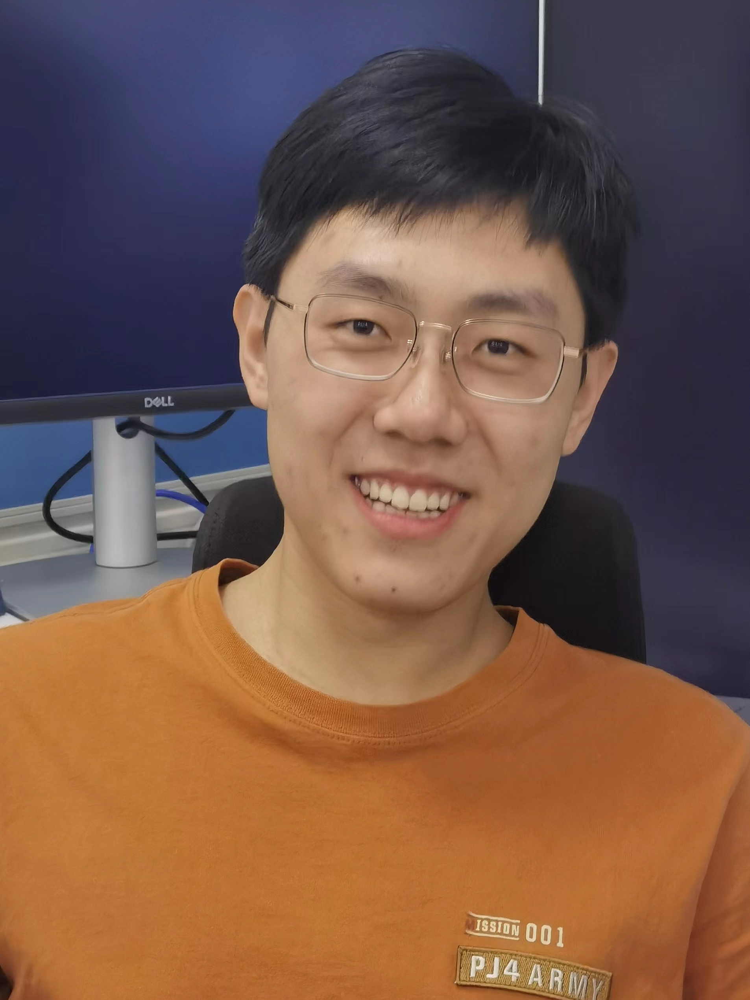

Future Intelligent Network and Communications (FineCom) Laboratory
|
|
About us
Our research lab, named Future Intelligent Network and Communications (FineCom) Laboratory, is established by Dr. Yijie (Lina) Mao in September, 2021. We mainly focus on the research field of wireless communication networks with emphasis on the potential key technologies for beyond 5G. Our research interests include (but not limited to):
MIMO communication systems
Transceiver design, multi-user interference management, resource allocation.
Rate-splitting multiple access (RSMA)
The theory, architectures, and applications of RSMA.
Artificial Intelligence-empowered wireless communication networks (AI + 6G)
The use of machine learning and deep learning to design efficient algorithms for resource allocation in wireless networks.
The use of wireless strategies for distributed learning and federated learning.
Reconfigurable Intelligent Surface (RIS)
Phase-shift design, beamforming design, and channel estimation for RIS-aided wireless networks.
The interplay of RIS with emerging 6G strategies.
Integrated Sensing and Communications (ISAC)
Spectrum sharing and management, joint system design, applications.
Space-Air-Ground Integrated Network (SAGIN)
Interference management, user scheduling, and cooperative transmission design.
Research Focus
-
AI for 6G & 6G for AI
Our primary focus is on leveraging machine learning (ML) and deep learning (DL) techniques to optimize network performance, resource allocation, and communication efficiency in next-generation wireless systems. We have contributed to various areas, including DL-based beamforming [1]—[4] and DL-based channel estimation.
Members

|

|

|

|
 |

|

|

|

|
|
Yijie (Lina) Mao
Assistant Professor |
Xiaohua Zhou
PhD Student
|
Kangchun Zhao
Master Student
|
Yiwen Wang
Master Student
|
Facheng Luo
Master Student
|
Kexin Chen
Master Student
|
Zhengqing Qiu
Master Student
|
Chenyu Xu
Master Student
|
Xiaoxuan Jiang
Master Student
|
Alumni
Chengzhong Tian (Master Student, 2021-2024, is now working in Beijing Aokang Yinhua Technology Co., Ltd.
Tianyu Fang (Master Student, 2020-2023, co-supervised with Prof. Zhengcai Zhu), is now pursuing his Ph.D. degree at the University of Oulu, Finland.
Yunpu Zhang (Research Assistant, 2023), is now pursuing his Ph.D. degree at the City University of Hong Kong, China.
Group Photos

|

|

|

|
|
Sep. 23, 2022 |
Oct. 30, 2022 |
May 12, 2023 |
May 14, 2023 |
Join us
-
Postgraduate (Master & PhD) Students
We are seeking highly motivated postgraduate students (master and PhD) who are interested in wireless communications. Students with strong backgrounds in wireless communications, mathematical optimization, signal processing, and machine learning are encouraged to apply.
- Post-doctoral Researchers
- Strong background in wireless communications (especially in the PHY layer)
- Strong background in mathematics and optimization theory
- Good English speaking and writing skills
- Sophisticated programming skills, e.g., MATLAB, Python
We are seeking highly motivated postdocs who are interested in wireless communication and wish to pursue research on 6G wireless communication system design. Ideal candidates are expected to meet the following requirements:
- Research Assistants
- A master degree in Communication Engineering related areas
- Sound organizational and interpersonal skills
- Proficient in programming languages such as MATLAB, Python
We are seeking a research assistant to work closely with the principal investigator, postdoc, and students in our lab. Ideal candidates are expected to meet the following requirements:
- Visiting Students
Visiting postgraduate students are warmly welcome. Feel free to drop us an email (maoyj@shanghaitech.edu.cn) if you are interested to come and visit ShanghaiTech for a few months and work with us.
- Inquiry
- A full up-to-date CV
- One copy of your undergraduate/postgraduate transcripts
- One copy of your representative research publication (if possible)
If you want to apply for one of the above positions, please email us (maoyj@shanghaitech.edu.cn) with the following documents attached: